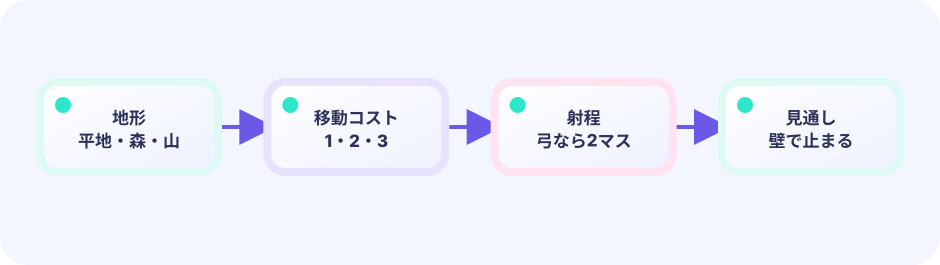

SEE
平地1・森2・山3を足し、同じ移動力でも道によって届く場所が変わる盤面を作ります。
★★★★☆ / PLAYABLE
平地1・森2・山3を足し、同じ移動力でも道によって届く場所が変わる盤面を作ります。

PLAY FIRST
平地1・森2・山3を足し、同じ移動力でも道によって届く場所が変わる盤面を作ります。
DEEP DIVE
単なる歩数ではなく、通った地形の合計を使います。優先度付きキューから一番安い候補を取り出すと、遠回りに見えても軽い道を正しく見つけられます。
平地1・森2・山3を足し、同じ移動力でも道によって届く場所が変わる盤面を作ります。
単なる歩数ではなく、通った地形の合計を使います。優先度付きキューから一番安い候補を取り出すと、遠回りに見えても軽い道を正しく見つけられます。
見えている情報から次の一手を選びます。
SYSTEM LAB
単なる歩数ではなく、通った地形の合計を使います。優先度付きキューから一番安い候補を取り出すと、遠回りに見えても軽い道を正しく見つけられます。
READY
UPDATE と DRAW の境界
キー・タッチを読み、位置・HP・ゲージ・タイマー・盤面を変えます。判定やキュー操作もこちらです。
入力 → ルール → game を更新できあがった game の値を読んで、絵・文字・エフェクトを置きます。game の値は変えません。
game を読む → ピクセルへ投影このページのルールは Update 側（または Update が呼ぶ純粋な関数）へ置き、Draw はその結果を表示するだけにします。
ひとつのゲーム、自由な見せ方
Updateとgame構造体がゲームの事実を司ります。下の並んだ画面は、同じ自動プレイの位置・箱・ゴールを同時に見ています。違うのはDrawだけで、このデモ以外の見せ方にも自由に差し替えられます。
GO + EBITENGINE
平地1・森2・山3を足し、同じ移動力でも道によって届く場所が変わる盤面を作ります。
nextCost := current.cost + terrainCost(next)
if nextCost <= unit.move { queue.Push(next, nextCost) }単なる歩数ではなく、通った地形の合計を使います。優先度付きキューから一番安い候補を取り出すと、遠回りに見えても軽い道を正しく見つけられます。
移動力、射程、制限ターンを変えよう。
橋を守る新しい任務をデータで足そう。
FEEDBACK